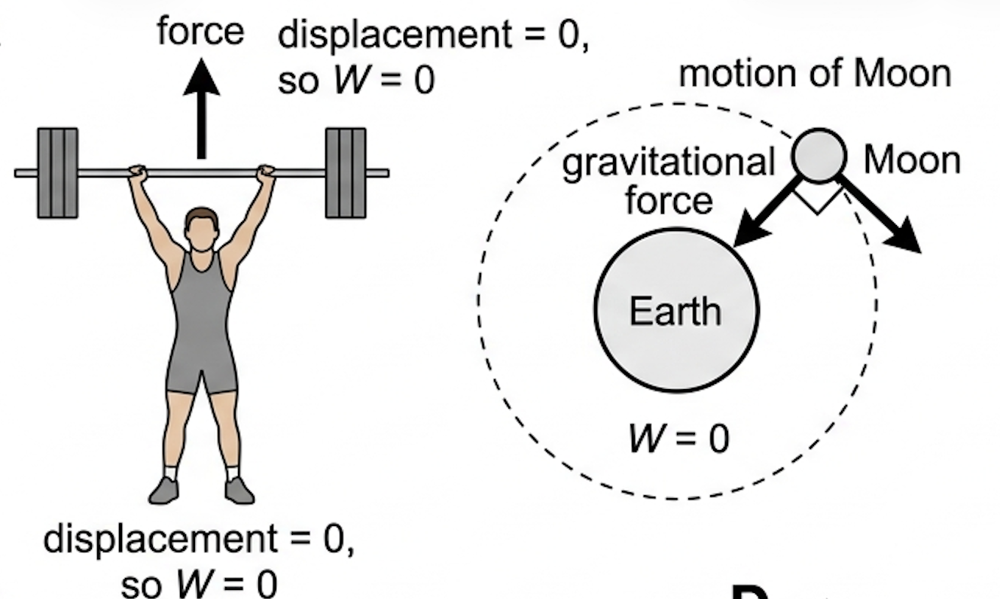
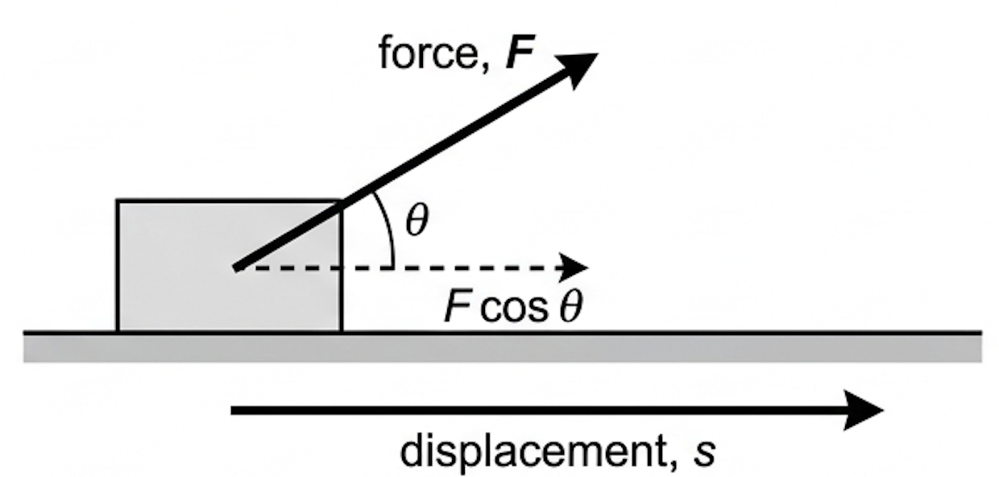
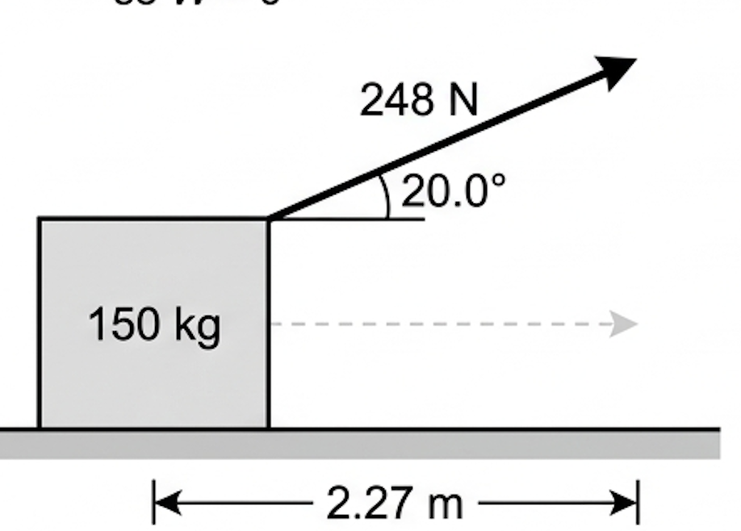
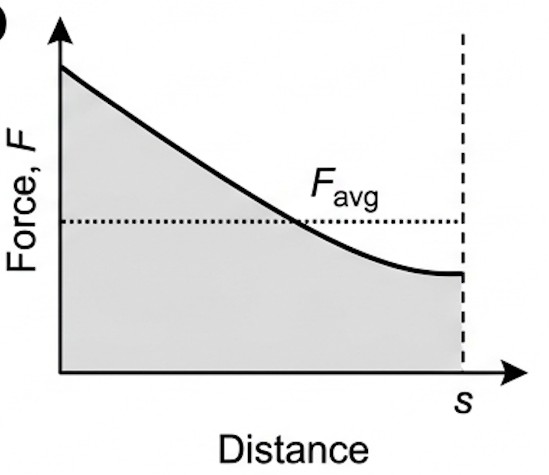
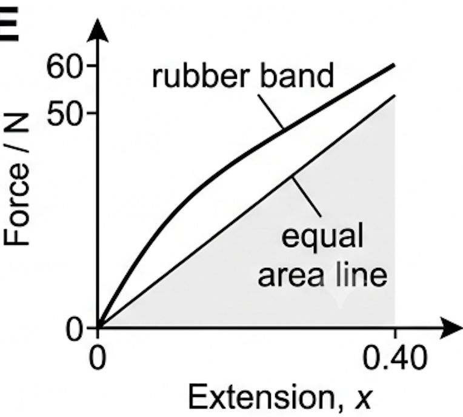

🎯 Hook – the weightlifter who does nothing
A weightlifter holds a loaded barbell motionless above their head. Their muscles burn, they are exhausted, and by any everyday measure they are working extremely hard. In physics, the mechanical work done on the barbell is exactly zero — because the barbell does not move.
The Moon is a stranger case. Gravity pulls on it constantly and it moves constantly, yet gravity does no work on it either, because the pull is always perpendicular to the motion. This is why a satellite needs no engine to stay in orbit.

📐 Defining work
Work is the energy transfer that occurs when a force moves an object. We say work is done on the object by the force. Only the component of the force along the line of displacement counts, so the general definition includes the angle \(\theta\) between the force and the direction of motion.
One joule is the work done when a force of 1 N moves through a distance of 1 m, so 1 J = 1 N m. Because work is a transfer of energy, it is measured in the same unit as energy, and energy itself is defined as the ability to do work.

When the force acts in the same direction as the motion, \(\theta = 0\) and \(\cos\theta = 1\), so the equation reduces to the familiar \(W = Fs\).
| Angle \(\theta\) | \(\cos\theta\) | Work done | Example |
|---|---|---|---|
| 0° | +1 | Maximum positive, \(W = Fs\) | Pushing a trolley forwards |
| Between 0° and 90° | Between 0 and 1 | Positive but reduced | Pulling a box by a sloping rope |
| 90° | 0 | Zero | Gravity on an orbiting Moon; carrying a case on the level |
| 180° | −1 | Negative, \(W = -Fs\) | Friction on a sliding block; braking |
✍️ Worked example – dragging a box at an angle

📈 Work done by varying forces
The equation \(W = Fs\cos\theta\) assumes a single constant force, but real forces rarely stay constant. For a varying force the work done is found from a force–distance graph:
In practice you estimate the average force by eye — draw a horizontal line so that the area of the rectangle beneath it matches the area under the curve. Then \(W = F_{\text{avg}}s\).
| Graph type | Axes (X, Y) | Shape | What to read |
|---|---|---|---|
| Force–distance | Distance \(s\), force \(F\) | Any curve | Area under the graph = work done |
| Average force line | Distance \(s\), force \(F\) | Horizontal line of equal area | Its height is \(F_{\text{avg}}\); \(W = F_{\text{avg}}s\) |
| Force–extension (Hooke's law spring) | Extension \(x\), force \(F\) | Straight line through the origin | Triangular area, \(W = \tfrac{1}{2}Fx\) |


🔬 Nature of science: same words, different meanings
Physics terms have precise meanings that often clash with everyday usage. "Work", "energy", "power", "momentum", "heat", "efficiency" and "interference" all mean something narrower in physics than in conversation.
There is no connection between \(W = Fs\cos\theta\) and "I have a lot of homework tonight". Recognising which sense of a word a question is using is part of learning the subject.
💪 Where does the effort go?
The weightlifter is not cheating thermodynamics. No work is done on the barbell, but work is done inside their muscles, where fibres repeatedly contract and relax to hold position. That energy leaves the body as thermal energy.
⚠️ Trap corner – common mistakes
| Misconception | Correct view |
|---|---|
| If you exert a force you must be doing work | Work needs displacement. A stationary object has zero work done on it however large the force. |
| \(\theta\) is the angle between the force and the horizontal | \(\theta\) is the angle between the force and the direction of motion. These coincide only when the motion is horizontal. |
| Work is always positive | A force opposing the motion does negative work. Friction removes energy from the moving object. |
| Use the total distance travelled | Use the displacement in the direction of the force. A body returning to its starting point has zero net work done by a constant force. |
| The gradient of a force–distance graph gives the work | The area gives the work. The gradient has no standard meaning here. |
| Heavier objects always need more work to move | Work is force × displacement. On a friction-free horizontal surface, mass does not appear in the calculation at all. |
Complete the statements:
(b) Calculate the work done in lifting an 18 kg suitcase through a vertical height of 1.05 m at constant speed. [2]
(c) Calculate the work done in pushing the same suitcase 1.05 m horizontally against an average frictional force of 37 N. [1]
(b) ✓ At constant speed the lifting force equals the weight, \(F = mg = 18 \times 9.8 = 176\ \text{N}\). ✓ \(W = 176 \times 1.05 = 185\ \text{J}\).
(c) ✓ \(W = 37 \times 1.05 = 39\ \text{J}\).
(a) Calculate the component of the force in the direction of motion. [1]
(b) State the magnitude of the frictional force, and explain your reasoning. [2]
(c) Determine the work done in moving the lawnmower for 3.0 s. [3]
(b) ✓ 54 N. ✓ The speed is constant, so the resultant horizontal force is zero and friction must balance the horizontal component of the push.
(c) ✓ \(s = vt = 0.85 \times 3.0 = 2.55\ \text{m}\). ✓ \(W = Fs\cos\theta = 54 \times 2.55\). ✓ \(W = 137 \approx 1.4 \times 10^{2}\ \text{J}\).
(b) A car of mass 1200 kg travels at constant speed for 1.4 km, during which 2.3 × 10⁶ J of work is done against resistive forces. Calculate the average resistive force. [2]
(b) ✓ \(F = W/s = 2.3\times10^{6} / 1400\). ✓ \(F = 1.6\times10^{3}\ \text{N}\).